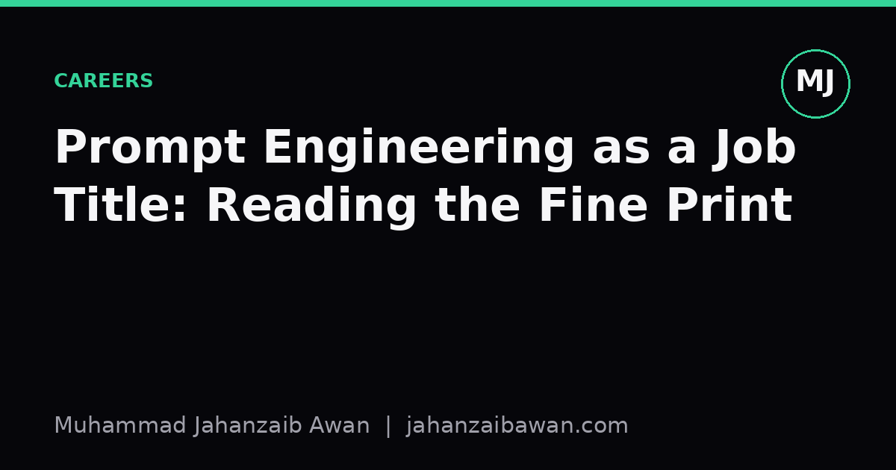

Prompt Engineering as a Job Title: Reading the Fine Print
The title says prompt writing, but the posting usually wants evaluation, tooling, and a lot of unglamorous plumbing.

The title oversells the craft
When a job posting says prompt engineer, the natural assumption is that the role is about finding the right words to coax a good answer out of a language model. That assumption is not wrong, but it is incomplete in a way that matters. Writing a prompt that works once, on one example, in a demo, is a small fraction of what these roles actually pay for. The rest of the job is the part that never makes it into the title: deciding what counts as a good answer, building a way to measure that at scale, and keeping the system honest as the model, the data, and the users all change underneath it.
I think the mismatch exists because prompting looks like writing, and writing looks like a skill anyone can judge by reading it. A hiring manager can glance at a prompt and feel they understand it. They cannot glance at an evaluation harness and feel the same confidence, so the posting leads with the visible, legible part of the job and buries the rest in bullet points about collaboration and iteration. If you read those bullet points carefully, they usually describe something closer to applied evaluation engineering with a language interface on top.
Take a concrete case. Suppose a company wants a prompt that classifies customer support tickets into five categories and extracts a priority level. The prompt itself might be forty lines long and take an afternoon to draft. Getting it to perform reliably across six months of real tickets, including the ones written in frustration, with typos, with mixed languages, with sarcasm, is a different task entirely. That task needs a labelled sample of tickets, a clear definition of what correct means for each category, and a repeatable way to score the model's output against that definition. None of that is prompt writing in the narrow sense, yet it is where most of the hours go.
What the posting is actually describing
Strip away the title and most prompt engineering postings describe four overlapping responsibilities. First, there is prompt design proper: structuring instructions, choosing few-shot examples, deciding how much context to provide and in what order. This part is real and does require judgement, but it saturates quickly. After a certain point, rewriting the prompt yields smaller and smaller gains, and the posting rarely says this out loud.
Second, there is evaluation design. Someone has to decide how success is measured before anyone can claim the prompt works. For the ticket classification example, that means building a held-out set of tickets that the prompt was never tuned on, ideally labelled by someone other than the person writing the prompt, to avoid the quiet bias of grading your own homework. If the held-out set has one hundred tickets and the prompt gets eighty-seven right, the next question is which thirteen it gets wrong and whether they share a pattern, such as tickets under fifteen words or tickets mentioning a refund. That diagnostic work is the actual engineering, and it looks nothing like prompt writing.
Third, there is pipeline and tooling work: version controlling prompts the way you would version control code, logging every model call with its inputs and outputs, setting up regression tests so that a prompt change which fixes one failure mode does not silently break three others. A team that skips this step will swear a new prompt is an improvement based on a handful of manually checked examples, then watch overall accuracy drop two months later when a quieter failure mode resurfaces at scale.
Fourth, there is the ongoing maintenance of a moving target. Models get updated, user behaviour drifts, and a prompt that scored well in January can degrade by June without any change on your end. Someone in this role is expected to notice that drift, which means monitoring live outputs against the same evaluation standard used at launch, not just at the start.
Why the distinction matters before you apply
If you walk into one of these roles expecting mostly creative prompt writing, you will be frustrated by how much of your week is spent building spreadsheets of labelled examples, arguing about label definitions, or debugging why a change that looked like an improvement on twenty examples made things worse on two hundred. If you walk in expecting an evaluation and systems role, the actual prompt writing will feel like the easy, almost relaxing part of the job.
This matters for how you prepare and how you interview. A candidate who can demonstrate that they built a labelled evaluation set, defined clear criteria for correctness, and measured a prompt's accuracy before and after a change is demonstrating exactly what the posting wants, even if they never call it prompt engineering in their own head. A candidate who brings a portfolio of clever one-off prompts with no measurement attached is showing a skill that is real but much smaller than the job requires.
It also matters for how you read the posting itself. Phrases like iterate based on feedback or collaborate with product to refine outputs are usually pointing at evaluation and measurement work, even though they are phrased softly. A posting that mentions working with ambiguous requirements is often describing the task of turning a vague product goal into a concrete, measurable definition of correctness, which is harder and more valuable than it sounds.
The practical takeaway
If you are applying for one of these roles, ask in the interview how success is currently measured, who builds the evaluation sets, and how often prompts are revisited after a model update. The answers will tell you far more about the real job than the title does. If you are hiring for one of these roles, consider renaming the title to something like evaluation engineer or applied LLM engineer, because it will attract people who already think in terms of measurement rather than people who only think in terms of clever phrasing. The words in the prompt matter, but the discipline around proving they work is the actual job, and it deserves to be named honestly.